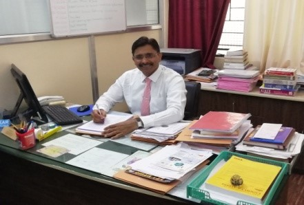

Sanjivani College Of Engineering, Kopargaon |
Home |
Departments |
Placements |
About Us |
Gallery |
Contact |
|---|
The Universe that we live in is continuously shrinking and real credit goes to the fast growing Electronics and Telecommunications revolution. The Electronics Engineering Department was established in 1983 and was later converted to Electronics and Telecommunication Engineering with intake of 120. The department conducts Undergraduate program and Postgraduate program with specialization in Digital Systems with intake of 18. Moreover the department has been declared as approved Ph. D. Research Centre by Savitribai Phule Pune University, Pune Since 2012. The department has 13 well equipped laboratories for Undergraduate and Postgraduate programs. These laboratories holistically conform not just to the University curriculum, but also to industrial requirements.
The undergraduate program in Electronics & Telecommunication Engineering is accredited by National Board of Accreditation (NBA), New Delhi from November 2013. Also the program has been permanently affiliated to Savitribai Phule Pune University, Pune.
Welcome to the Department of Electronics and Telecommunication Engineering at Sanjivani Rural Education Society’s Sanjivani College of Engineering, Kopargaon. The department has a state of art facilities and highly qualified faculty. The department works with the objective of addressing critical challenges faced by the Industry, society and the academia. Perhaps even more important is our unceasing commitment to our students, helping them to learn, grow, develop, and achieve their goals in their pursuit to excel in their professional career.
We welcome you to the Electronics and TeleCommunication Engineering Department as undergraduate or post graduate or research scholar and we hope to be part of your success.
